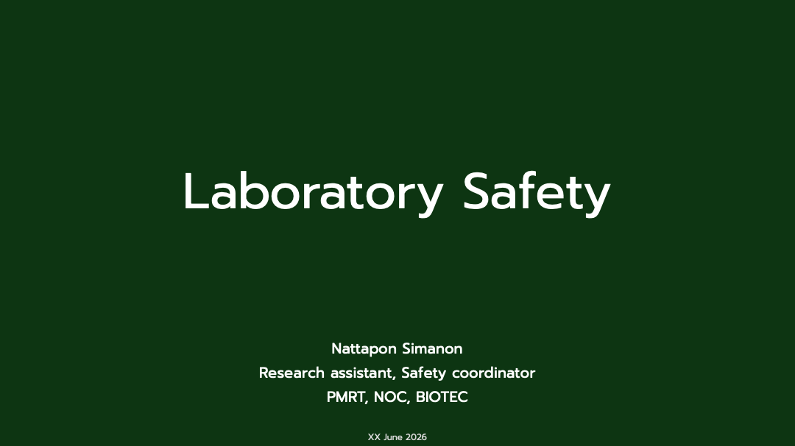
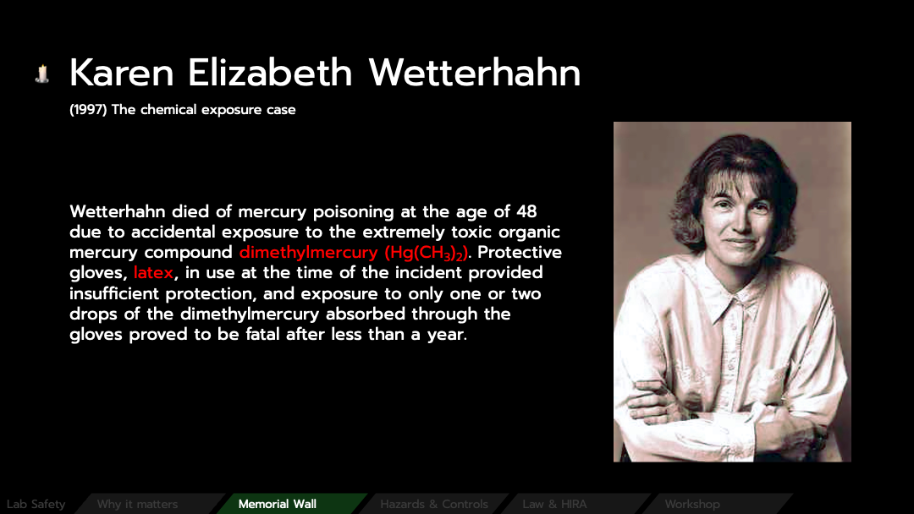
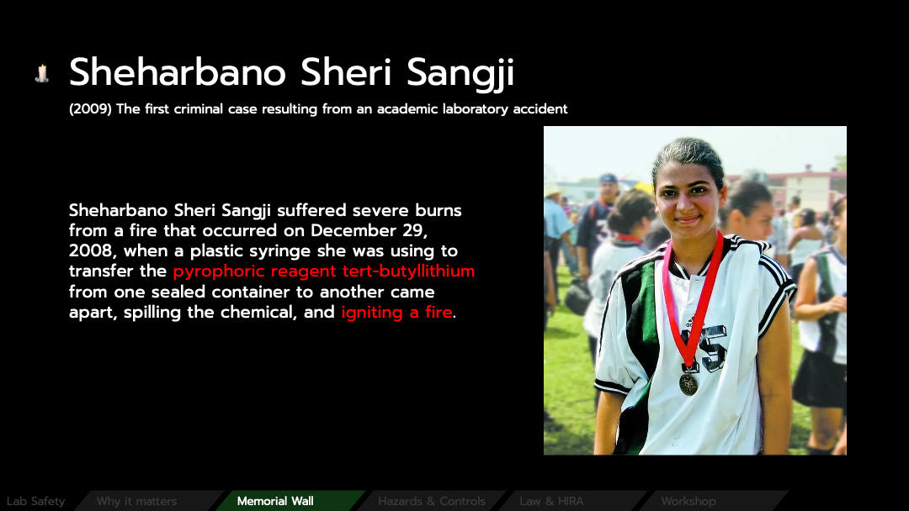
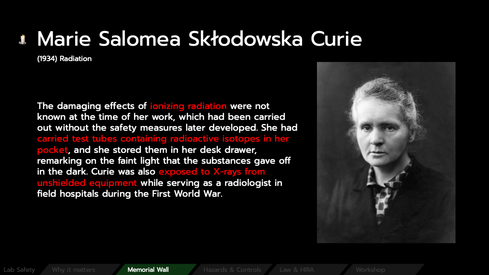
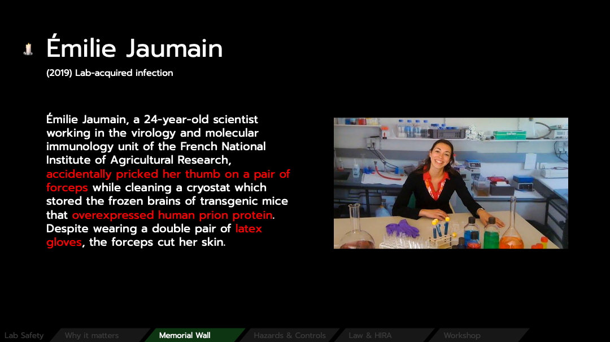
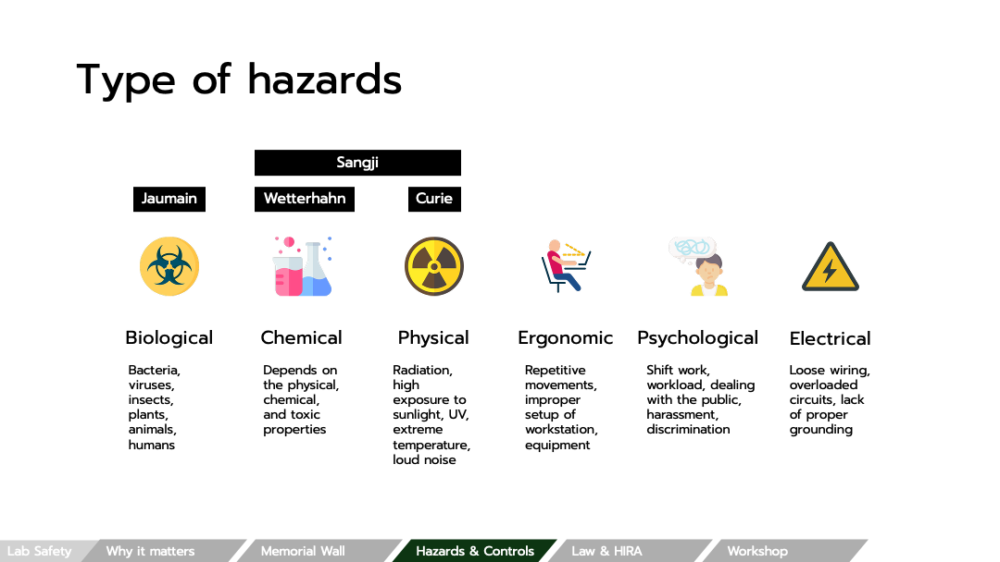
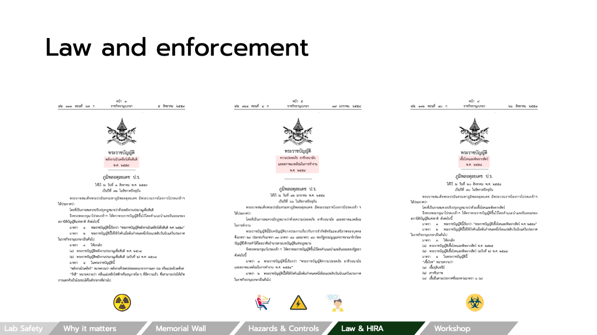
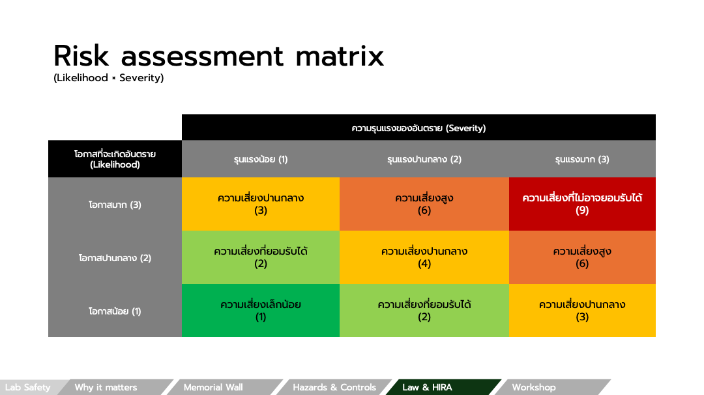
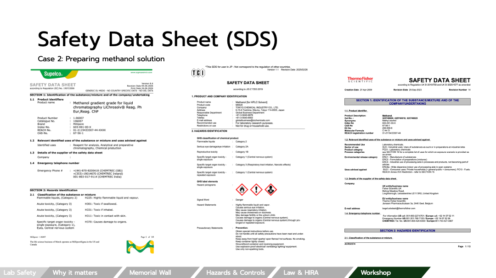

บทความนี้สรุปเนื้อหาการบรรยายเรื่องความปลอดภัยในห้องปฏิบัติการ ตั้งแต่เหตุผลว่าทำไมเรื่องนี้จึงสำคัญ
ผ่านกรณีศึกษาจริงที่จบด้วยการสูญเสีย ไปจนถึงการจำแนกประเภทอันตราย กรอบกฎหมาย
และการประเมินความเสี่ยงอย่างเป็นระบบด้วย HIRA พร้อม workshop วิเคราะห์ 3 กรณีตัวอย่างในห้องปฏิบัติการ
⬇ ดาวน์โหลดสไลด์ฉบับเต็ม (PDF)
34 หน้า
1. ทำไมความปลอดภัยจึงสำคัญ

ความปลอดภัยในห้องปฏิบัติการไม่ใช่เรื่องของการทำเอกสารให้ครบ หรือการปฏิบัติตามกฎเพื่อผ่านการตรวจ
แต่เป็นเรื่องของการทำให้ทุกคนที่เข้ามาทำงานได้กลับบ้านในสภาพเดิมที่เข้ามา
อุบัติเหตุในห้องแล็บหลายครั้งไม่ได้เกิดจากความประมาทร้ายแรง แต่เกิดจากช่องว่างเล็ก ๆ
ในการควบคุมความเสี่ยงที่ถูกมองข้ามซ้ำ ๆ จนกลายเป็นความสูญเสียที่ย้อนคืนไม่ได้
2. Memorial Wall: บทเรียนจากเรื่องจริง
กรณีเหล่านี้คือเรื่องจริงของนักวิทยาศาสตร์ที่ต้องแลกด้วยสุขภาพหรือชีวิต
แต่ละกรณีชี้ให้เห็นช่องว่างของการควบคุมความเสี่ยงที่เราเรียนรู้ได้ และต้องไม่ปล่อยให้เกิดซ้ำ

Karen Wetterhahn เสียชีวิตจากพิษปรอทอินทรีย์ (dimethylmercury) ที่ซึมผ่านถุงมือ latex

Sheharbano "Sheri" Sangji บาดเจ็บสาหัสจาก tert-butyllithium ที่ติดไฟเมื่อสัมผัสอากาศ

Marie Curie ผลระยะยาวจากการสัมผัสรังสีต่อเนื่องโดยไม่มีการป้องกัน

Émilie Jaumain ติดเชื้อ prion จากอุบัติเหตุเข็มทิ่มขณะทำงานกับ BSE
บทเรียนร่วมกัน: ทุกกรณีมีจุดที่ "การควบคุมความเสี่ยงที่เหมาะสม" สามารถป้องกันได้
ตั้งแต่การเลือก PPE ที่ถูกต้อง (ถุงมือ latex ไม่กันสารบางชนิด) ไปจนถึงการมี engineering control
และ SOP ที่รัดกุม
3. ประเภทของอันตรายและการควบคุม
อันตรายในห้องปฏิบัติการแบ่งได้เป็นหลายหมวด แต่ละหมวดมีแหล่งกำเนิดและแนวทางควบคุมที่ต่างกัน:
- Biological : แบคทีเรีย ไวรัส แมลง พืช สัตว์ และมนุษย์
- Chemical : ขึ้นกับสมบัติทางกายภาพ เคมี และความเป็นพิษของสาร
- Physical : รังสี แสงแดด/UV อุณหภูมิสุดขั้ว เสียงดัง
- Ergonomic : ท่าทางซ้ำ ๆ การจัดสถานีงานที่ไม่เหมาะสม อุปกรณ์
- Psychological : การทำงานเป็นกะ ภาระงาน การรับมือกับสาธารณะ
- Electrical : อุปกรณ์ไฟฟ้าและระบบไฟในห้องแล็บ

6 หมวดหลักของอันตรายในห้องปฏิบัติการ
หลักการควบคุมยึดตาม hierarchy of controls โดยเรียงลำดับความมีประสิทธิภาพจากมากไปน้อย:
Elimination → Substitution → Engineering controls → Administrative controls → PPE
ยิ่งควบคุมได้ที่ต้นทาง (กำจัดหรือทดแทนอันตราย) ยิ่งได้ผลกว่าการพึ่งพา PPE ที่ปลายทาง
4. กฎหมายและมาตรฐาน
การจัดการความปลอดภัยในห้องปฏิบัติการมีทั้งมาตรฐานระดับชาติและนานาชาติรองรับ
พร้อมกฎหมายและกลไกบังคับใช้ที่กำหนดหน้าที่ของผู้ปฏิบัติงานและองค์กร

ตัวอย่าง กฎหมายและการบังคับใช้ที่เกี่ยวข้องกับความปลอดภัยในห้องปฏิบัติการ
5. HIRA: การประเมินความเสี่ยง
HIRA (Hazard Identification and Risk Assessment)
คือกระบวนการชี้บ่งอันตรายและประเมินความเสี่ยงอย่างเป็นระบบ ครอบคลุมทั้งงานประจำและไม่ประจำ
รวมถึงคนภายนอกและปัจจัยมนุษย์ โดยประเมินจากสององค์ประกอบหลัก:
- Likelihood: โอกาสที่จะเกิดอันตราย
- Severity: ความรุนแรงของผลที่ตามมา
นำทั้งสองค่ามาประกอบกันใน risk assessment matrix ขนาด 3×3
แล้วจัดระดับความเสี่ยงออกเป็น 5 ระดับ ตั้งแต่ "เล็กน้อย" ไปจนถึง "ไม่อาจยอมรับได้"
พร้อมแนวทางจัดการที่แตกต่างกันตามระดับ

Risk assessment matrix (Likelihood × Severity) → 5 ระดับความเสี่ยง
ข้อควรระวังเรื่อง Severity: เมื่ออันตรายเข้าข่ายหลายหมวด
ให้เลือกระดับสูงสุดเป็นความรุนแรงสุดท้าย เช่น สารเคมีระคายเคืองเล็กน้อย = ระดับ 1
แต่ถ้าเป็นสารก่อมะเร็ง = ระดับ 3 ทันที นอกจากนี้ Severity ไม่ได้เป็นเพียงคุณสมบัติของ Hazard
แต่ต้องคำนึงถึงลักษณะของ Consequence ที่เกิดขึ้นจริงด้วย
6. Workshop: วิเคราะห์ 3 กรณีตัวอย่าง
Workshop ต่อไปนี้ให้ลองประเมินความเสี่ยงจากงานจริงในห้องปฏิบัติการ 3 กรณี
โดยพิจารณา hazard, likelihood, severity แล้วออกแบบ controls ตาม hierarchy
Case 1: Pipetting infectious sample
สถานการณ์: ดูดตัวอย่างที่มีเชื้อ E. coli O157:H7 (EHEC) ในตู้ BSC Class II
ภายใน BSL-2 lab ด้วยไมโครปิเปต 100–1000 µL ผู้ปฏิบัติ 1 คน ทำ 3–4 ชม./วัน
Hazard:
🔽 See the answer
🔼 Hide the answer
ชีวภาพ (เชื้อโรค Risk Group 2) · โอกาสรับสัมผัสจาก aerosol, splash, sharps, surface contamination
Controls:
🔽 See the answer
🔼 Hide the answer
- Elimination/Substitution: ใช้สายพันธุ์ attenuated/non-pathogenic เมื่อทำได้
- Engineering: BSC Class II (ไม่ใช่ chemical fume hood), aerosol-resistant filter tip, ทิ้งของเหลวลง waste ที่มี disinfectant
- Administrative: SOP, biosafety training, ห้ามดูดตัวอย่างด้วยปาก, decontaminate BSC ก่อน/หลังใช้
- PPE: ถุงมือ nitrile, lab coat กระดุมหน้า, safety glasses
Case 2: Preparing methanol solution
สถานการณ์: เตรียม methanol 50% ปริมาณ 100 mL สำหรับ mobile phase ของ HPLC
ใน fume hood ความถี่ 2–3 ครั้ง/สัปดาห์
Hazard:
🔽 See the answer
🔼 Hide the answer
เคมี: กดประสาทส่วนกลาง + ทำลายเส้นประสาทตา (ตาบอด), ติดไฟง่าย (flash point 11°C), ดูดซึมทางผิวหนัง

Safety Data Sheet (SDS): แหล่งข้อมูลอันตรายและการจัดการสารเคมีที่ต้องอ่านก่อนทำงาน
Controls:
🔽 See the answer
🔼 Hide the answer
- Elimination: ใช้ pre-mixed mobile phase จาก supplier ถ้าทำได้
- Substitution: บาง assay เปลี่ยนเป็น acetonitrile/water ได้ (พิษน้อยกว่าแต่แพงกว่า และยังต้องพิจารณาความเสี่ยงจาก HCN)
- Engineering: fume hood ที่ certified, secondary containment, bonding & grounding, แยก flammable cabinet
- Administrative: SOP, no eating/drinking, buddy system, จำกัดปริมาณบนโต๊ะ
- PPE: ถุงมือ nitrile (latex ทะลุ, ดูกรณี Wetterhahn), safety glasses/goggles, lab coat 100% cotton
Case 3: Changing gas cylinder
สถานการณ์: เปลี่ยนถัง He carrier gas สำหรับ GC-MS ขนาด 47L ที่ 2000 psi
ในห้องเครื่องมือ ~30 m² มีระบายอากาศ ความถี่ 1 ครั้ง/เดือน ผู้ปฏิบัติ 1 คน
Hazards:
🔽 See the answer
🔼 Hide the answer
กายภาพ (ถังหนัก ~70 kg / valve หักแล้วถังพุ่งเหมือนจรวด), ความดัน (2000 psi), ขาดออกซิเจน (He ดันออกซิเจนออกจากห้อง), เสียงดัง
Controls:
🔽 See the answer
🔼 Hide the answer
- Elimination: ใช้ระบบ centralized gas + pipeline (ถังอยู่นอกอาคาร)
- Substitution: เปลี่ยน He เป็น H₂ generator (ไม่ต้องมีถัง แต่เพิ่ม fire risk ต้องชั่งน้ำหนัก)
- Engineering: chain/strap ยึดถังถาวร, regulator ที่เหมาะกับก๊าซ, leak detector, O₂ monitor, exhaust ventilation, cart มี wheel lock
- Administrative: SOP ละเอียดทุกขั้น (close valve → vent → loosen regulator → … → end process), buddy system, ตรวจ leak ด้วย soap solution ทุกครั้ง, checklist ก่อนเริ่ม
- PPE: steel-toe boots
Summary — ทำบ่อย ≠ เสี่ยงมาก:
เทียบ Case 1 กับ Case 3 จะเห็นว่า Case 1 ทำทุกวันแต่ controls ครบ จึงเสี่ยงน้อย
ส่วน Case 3 ทำเดือนละครั้งแต่ controls ขาดเยอะ จึงเสี่ยงสูง ·
สารอันตรายระดับสูงพิเศษ (เช่น methanol, H₂) ให้ severity = 3 อัตโนมัติ ·
Hazard เดียวกันให้ severity ต่างกันได้ ขึ้นกับ pathway และปริมาณ
"Safety is not about protecting the laboratory. Safety is about making sure everyone goes home
in the same condition they arrived."
— Anonymous